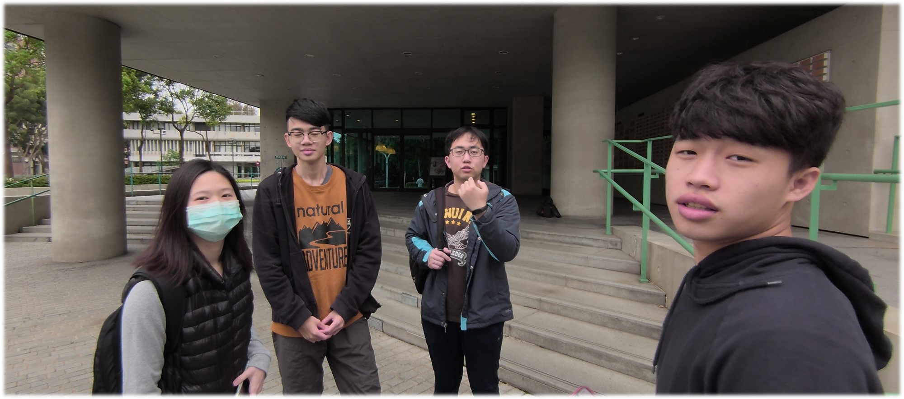
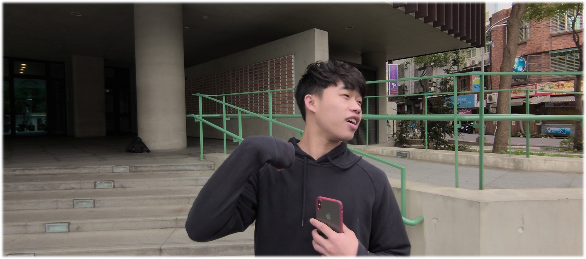
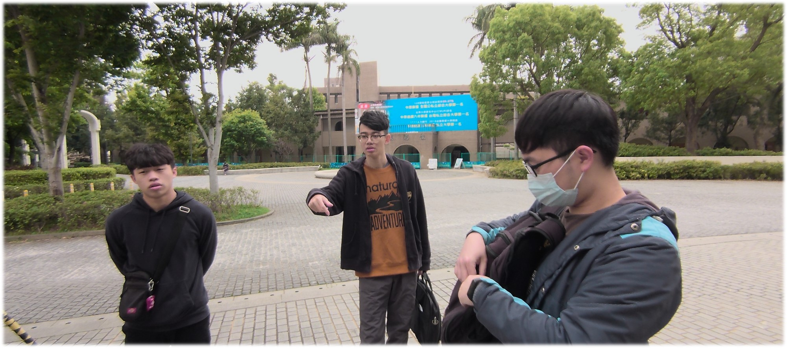
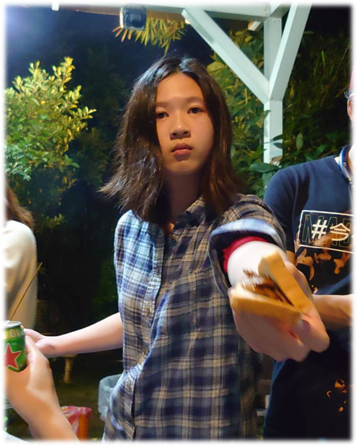
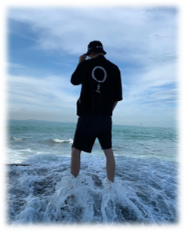
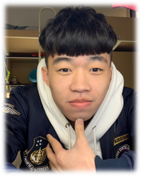

我是資管四甲的林俐君，平時喜歡聽音樂、滑手機與看小說動漫，之前是醫學工程系的，讀了幾年下來，發現自己並不擅長物理與化學，後來才輾轉轉系來資管系，雖然目前對於未來沒有非常確定的目標，但我會盡力做好我所負責的任務！
到了大四才終於選到了多媒體，之前一直衝堂外加選不到課，讓我一直心慌慌QQ，怕不能如期畢業。在這次的期中專案我是負責主要網頁撰寫的成員，通過這個專案，我對於如何撰寫網頁有了與之前相比很大的進步，這也是我這次最大的收穫！
我是資管三甲的黃靖沅，平時喜歡打球和跟朋友一起出去打屁聊天，偶爾也會跟朋友一起玩玩線上遊戲，因緣際會下指考考上中原資管系，原本對電腦不是很感興趣，經過這幾年後慢慢開始對於電腦有研究，也希望在將來也能往這個領域去發展。
藉由這次構思介紹中原去設立網站，我發現要從擬定一直到完工是需要非常大量的時間以及精力，而且絕對不是憑一己之力就可以完成的，需要小組的溝通和配合，每個人都應該做好小組討論出來的分工，這樣合併起來才是一個團隊，最後的成果才會完美。

我是來自財金三甲的張右林，之所以會出現在這堂課程純粹只是因為我是來雙主修資管系的，也因此我到了大三的階段還依舊是二十五學分的情況，所以目前正處於天天爆肝的狀態，希望未來能在大四準時畢業，然後能同時精通兩個系所教授的專業能力。
這堂課對我來說，不能算是毫無概念，畢竟我之前就有因為實習的經驗，所以有參與架設網站的機會，雖然負責架設的人是外校的學長姊，但是我算是對此有點基本概念，那也因此這學期剛好有這個機會來把我之前鴨子聽雷的部份給嘗試看看，而不再只是做一個旁觀者。
我是資管二乙的梁璟銘，我是中原大學男排校隊的球員，以體保的身分進入中原大學資管系的，我在運動方面很厲害但是功課上就沒有運動方面的優秀了，所以我會更加的努力跟上同學們的腳步。
在這個課程中，讓我了解到設計網頁要費很多的心思，當然這個團隊也必須同心協力才能把一個好的前端做好，幸好我的組員們都很和諧，大家在討論上沒有過大的分歧，分配下去的工作也如時的完成，相信這樣的團隊做出來的作品會是很優秀的。
